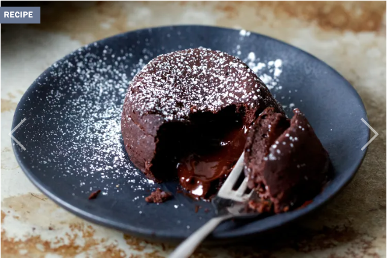

Chocolate Lava Cake

From their big debut in the 1990s from chef Jean-Georges Vongerichten to their ever-presence on dessert menus since, chocolate molten lava cakes are easily one of the most trodden tropes of the restaurant world. There are enough riffs on it out there to fill two internets; does anyone need another? The Smitten Kitchen has been lava cake-free since its 2006 inception mostly because I’m not terribly into warm, oozy desserts (I KNOW). But it’s not just about me anymore, is it? Last Valentines I had a moment of glowy domestic benevolence and decided to make them for the family and blew each and every one of their minds, most especially my husband, who demanded to know if I had known how to make them all along, why had I waited so long? Fair enough.
Ingredients
- Heat oven to 450 degrees F. Butter two 6-ounce ramekins or baking cups, making sure not to miss any spots. Spoon a little cocoa powder in each and pat it around so it coats the bottom and sides, then knock the excess out.
- 2 teaspoons cocoa powder, plus more for dusting
- 3 ounces (85 grams) bittersweet chocolate, roughly chopped
- 1/8 teaspoon fine sea salt or a couple pinches of flaky salt
- 1 to 2 tablespoons (13 to 25 grams) granulated sugar (see Note)
- 1 large egg
- 1 egg yolk
Steps
- Put the first six ingredients in a large mixing bowl and
add 2½ teaspoons of salt and 1½ teaspoons of black pepper.
Whisk well and set aside.
- Place 4 tablespoons butter and chocolate in a medium heatproof bowl and — either in the microwave or set over a pot of gently simmering water — melt the butter and chocolate about two-thirds of the way, then whisk until it finishes melting. (This ensures it’s not too hot to add other ingredients.) Whisk in sugar and salt. Whisk in egg and yolk and beat a good 20 to 30 extra times, to ensure mixture is smooth, glossy, and a bit lightened.* Add 2 teaspoons cocoa powder and whisk until combined.
- Divide between two baking dishes. Bake 7 to 9 minutes (7 will be the most molten in the center, 9 the least but still gooey) and transfer to a cooling rack for 1 minute. Wearing pot holders, place a small dessert plate over your first ramekin. Flip it onto the plate, count to ten, then lift the cup off. Repeat with second cake. Dust with cocoa powder or powdered sugar. Serve with barely sweetened whipped cream, a little ice cream, berries, or absolutely nothing at all. Eat immediately.